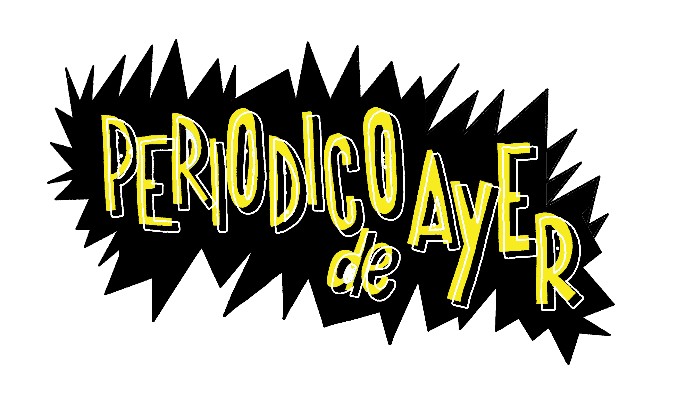
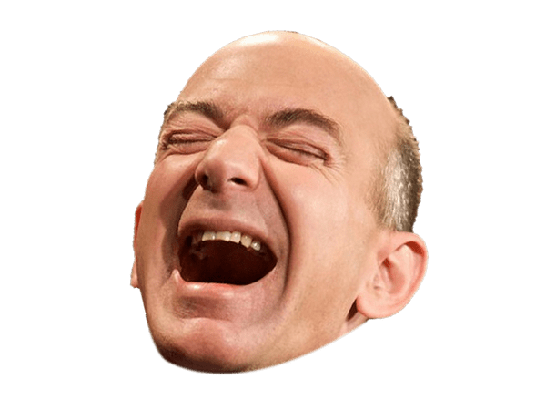

Tous les numéros
Bimestriel, sauf une fois en 2021, on s'est un peu plantés. Huit numéros, huit occasions de perdre un peu de temps utile.

Retrouvez tous les anciens numéros de votre fanzine préféré, en PDF, gratuitement, sans publicité, sans newsletter, sans rien vous demander en échange. Si, juste un peu de votre dignité.
Lire le dernier numéro →Bimestriel, sauf une fois en 2021, on s'est un peu plantés. Huit numéros, huit occasions de perdre un peu de temps utile.
Concrètement, c'est vraiment pas grand chose. Et puis tout le monde me demande : "Est-ce que tu en vis, de ce journal ? Et si oui, combien tu pèses ? As-tu beaucoup de succès avec les femmes ?". Alors OUI, 543k€ TTC par an et BEAUCOUP. Je n'ai pas de secret pour vous.
Chaque semetre, des informations pertinentes et subjectives sur le monde de merde dans lequel on vit.
Chaque semetre, des conseils et des trucs et astuces pour vous rendre plus intelligents et vous diriger vers la voie de la raison.
Chaque semetre, on vous donnera des sujets de conversations avec les gros fils de chien que vous détestez mais que la vie vous force à cotoyer.
Et alors "last but not least", Periodico de Ayer, c'est du FUN en boîte
Tous les jours, des centaines de nouveaux lecteurs découvrent ce magazine. Vous, vous regardez quoi comme série sur Netflix en ce moment ?

Periodico de Ayer makes me laugh so much I need to cry all the time. I want to invest billions of dollars in this magazine because I share the magazine's convictions.— Jeff
Tu amor es un periódico de ayer. Que nadie más procura ya leer. Sensacional cuando salió en la madrugada.— Héctor Lavoe
Tu te rappelles de ce match en 2012 contre Rennes ? Je l'ai forcé à lire Periodico de Ayer 24h/24 pendant 3 semaines avant ce match.— Christian Gourcuff